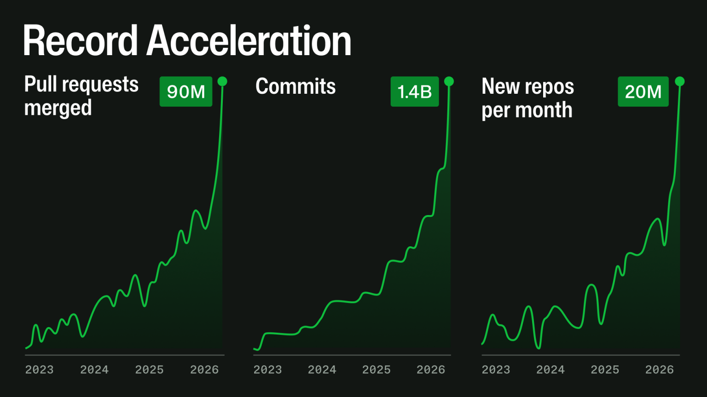
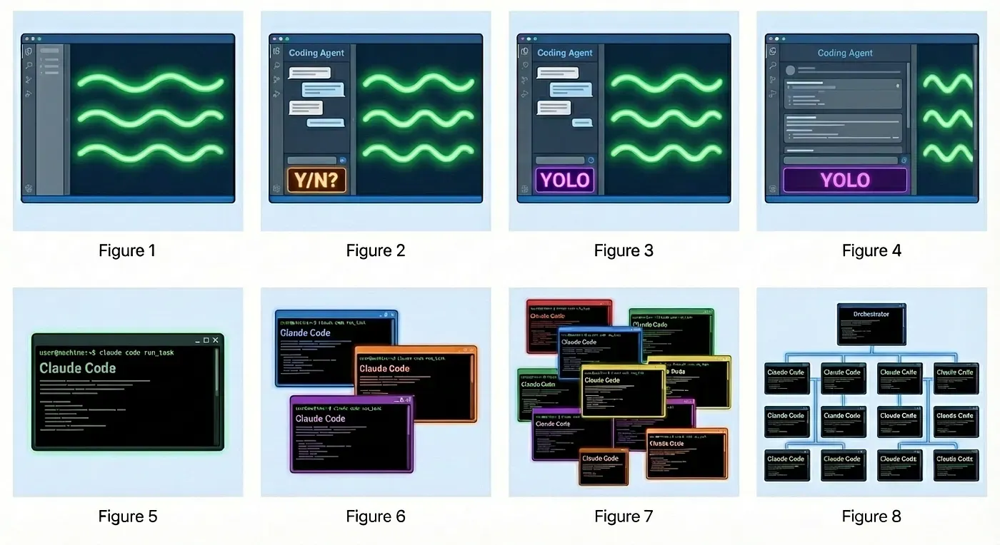
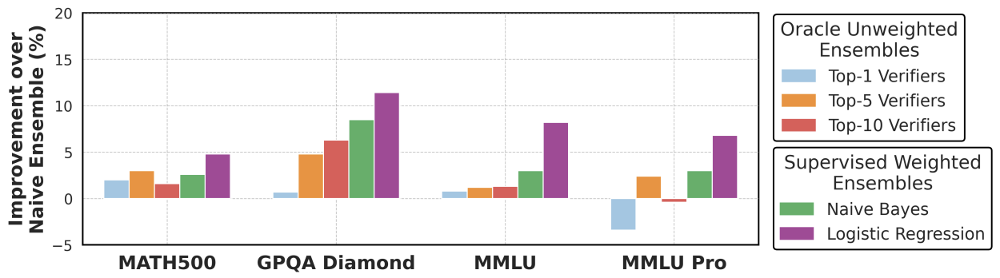

Jon Zeolla
AI Governance and Guardrails
Cloud Security Alliance · Birmingham
Source: GH Archive · public events only (private repos excluded; bot accounts not filtered). Commits = sum of PushEvent.payload.distinct_size; PRs = PullRequestEvent with action="opened". Queried via the public github_events table on ClickHouse Playground on 2026-05-17.

Image source: GitHub — github.blog/news-insights/company-news/an-update-on-github-availability/

The Software Development Lifecycle (SDLC)
Plan
Build
Test
Distribute
Deploy
Run
The Agentic Development Lifecycle (ADLC)
Plan
🤖
✅ Steering Files
Build
🤖
✅ Steering Files
Test
🤖
✅ Agent Review
Distribute
🤖
✅ Policy as Code
Deploy
🤖
✅ Policy as Code
Run
🤖
✅ Feedback Loops
Agents & Validators
# Project Rules
## Architecture
- Use the repository pattern for all data access
- All API endpoints must validate input with Pydantic
- Use dependency injection for services
- Never call the database directly from route handlers
## Security Requirements
- Never commit secrets or API keys
- All user input must be sanitized
- Use parameterized queries for database access
- Enable CORS only for approved origins
## Code Standards
- Follow PEP 8 conventions
- All public functions require docstrings
- Minimum 80% test coverage for new code
- Use type hints on all function signatures
Works with
CLAUDE.md
Anthropic / Claude Code
AGENTS.md
Open standard, dozens of IDEs
copilot-instructions.md
GitHub Copilot
GEMINI.md
Google / Antigravity
... and dozens more
Benefits
Very little cost
Just a markdown file — though it does add tokens to every session.
Version-controlled
Reviewed and merged like any other code change.
Works everywhere the agent runs
One file, picked up by IDE agents, CLI agents, and CI reviewers alike.
Reduces variability
Across developers and agents — "we do it this way here."
Shortcomings
Doesn't scale
One file per repo — hundreds of files to update for one policy change.
Hard to maintain
Projects evolve and files become stale misinformation.
Best-effort instructions
The agent may downweight or disregard them. No real enforcement.
No audit trail
No evidence of which rule applied where — bad for compliance.
System Prompt
You are Claude Code. You have access to Read, Edit, Bash, Grep...
Startup: Loading context files
Read AGENTS.md — project rules, architecture constraints, security requirements
Startup: MCP Server — GitHub (24 tools)
Loading tool schemas into system prompt...
You
Fix the SQL injection vulnerability in our auth service
Claude
I'll read the auth service to find the vulnerability.
Tool Result — 847 tokens
def login(req): user = db.query(f"SELECT * FROM users WHERE email='{req.email}'")...
Read models.py — 1,240 tokens
class User(Base): email = Column(String), password_hash = Column(String)...
200K Token Context Window
Tokens used
10,000
of 200,000
| 0–8K | 8–16K | 16–32K | 32–64K | 64–128K |
|---|---|---|---|---|
| 43.0 | 26.0 | – | – | – |
| 48.7 | 34.0 | 16.9 | – | – |
| 53.0 | 45.6 | 25.8 | 22.0 | 6.8 |
| 70.9 | 60.5 | 38.1 | 37.2 | – |
| 70.4 | 58.1 | 28.8 | 31.2 | 26.4 |
| 73.5 | 58.8 | 37.0 | 36.7 | 29.6 |
Lost in the Middle: How Language Models Use Long Contexts, Liu et al., ACL 2024
Context and Skills

Figure 1 from Yang et al., “SkillOpt: Executive Strategy for Self-Evolving Agent Skills” (2026)
Agent Loops
require
Verifiers
Coding Agents Maturity Model
1 · Steer
2 · Review
3 · Verify
4 · Improve
“Everyone here agrees as much as we can do statically we should do statically”
Dex Horthy · Geoff Huntley · Ian Livingstone · Greg Pstrucha
Four kinds of verifier
Software
Tests, linters, type checkers, schema validation, policy engines. Deterministic.
Machine learning
Classifiers, clustering, anomaly detection. Trained, not prompted.
LLM as judge
A model reading the change and arguing about it.
Human
A reviewer who understands why the system exists.
Everything is a tradeoff
Software
deterministic
Machine learning
probabilistic
LLM as judge
generative
Human
judgement
Catches what nobody anticipated
only what you wrote
statistical outliers
unseen patterns
the truly novel
Same verdict every time
by construction
threshold & drift
varies per run
varies per mood
Cheap enough for every change
milliseconds
milliseconds
seconds, per call
the scarce one
Produces auditable evidence
the rule and the run
“scored 0.87”
explains, may confabulate
a named approver
Reads intent across context
no notion of why
features, not meaning
spans files
knows the business
● strong · ◐ partial · ○ weak
Groups of small verifiers perform best

Figure from Saad-Falcon et al., “Shrinking the Generation-Verification Gap with Weak Verifiers” (2025)
Information Security Policy · v3.4
Encryption at Rest
§3.4.1 All data shall be encrypted at rest using customer-managed keys. No exceptions.
Approved: CISO · 2026-02-14
SOC 2 expects this control already. Auditors will look for it on day one.
Public marketing copy ships in the HTML. Encrypting it at rest in the browser and decrypting with JS adds zero protection.
Customer-data tables and snapshot exports — exactly where CMKs earn their keep.
CloudWatch Alarms cannot publish to SNS topics encrypted with CMK. Engineering has to carve a documented exception.
Self-improvement needs its own guardrails
One failure is not a pattern
It broke for one user, on one model, once. Do you change the rule? Decide that in advance, not while someone is waiting.
Name the threshold
Multiple people? Multiple models? A quarter of runs? Pick the bar that promotes a signal into a rule change, and write it down.
Data driven decision making
Change it only when you can measure that it got better. If the new guidance does not move a held-out set of real tasks, it is prose.
log.info(f"Charging ${amount} to card {card}, cvv {cvv}")
db.execute(f"INSERT INTO payments VALUES ('{card}', {amount})")
Policy pci-dss/no-pan-logging: Logging raw card number and CVV violates PCI-DSS §3.4. SQL string interpolation violates sql-injection/no-interpolation.
Claude
Good catch. Masking the PAN, removing CVV from logs, and switching to parameterized queries:
- log.info(f"Charging ${amount} to card {card}, cvv {cvv}")
+ log.info(f"Charging ${amount} to card ****{card[-4:]}")
- db.execute(f"INSERT INTO payments VALUES ('{card}', {amount})")
+ db.execute("INSERT INTO payments VALUES (%s, %s)", (masked, amount))
How it works
AI triggers a lifecycle event (e.g. about to write a file)
Claude Code checks settings.json for matching hooks
Hook script runs with event data piped as JSON to stdin
Exit code determines outcome: 0 = allow, 2 = block
stdout/stderr fed back to AI as context or error message
Configuration
{
"hooks": {
"PreToolUse": [{
"matcher": "Write",
"hooks": [{
"type": "command",
"command": "./check.sh"
}]
}]
}
}
“In the Land of AI Agents, the Verifiers Are King”
Tariq Shaukat, CEO of Sonar
Structure = Speed
Context files
Conventions, architecture, and approved patterns written where the agent reads them. It stops inferring house style from whatever file it happened to open.
Hooks
Checks that fire inside the loop, while the agent still has the change in hand. It fixes its own mistake instead of waiting on a human to find it.
Reviewers
Agent and human review catch what no rule was written for, and every correction becomes something the next attempt already knows.
How I run loops today
claude.ai routines
Scheduled Claude Code runs in the cloud. Nothing of mine has to be awake.
Claude Code /schedule
Cron for the session already in front of me.
Host cron jobs
crontab on a machine I already operate. Unfashionable and completely reliable.
EventBridge and Lambda
Serverless, and event-driven when a schedule is the wrong trigger.
Hermes / OpenClaw crons
Scheduled runs on the Hermes and OpenClaw stack.
Agents & Validators
Questions?
Thank you!
Jon Zeolla
linkedin.com/in/jonzeolla